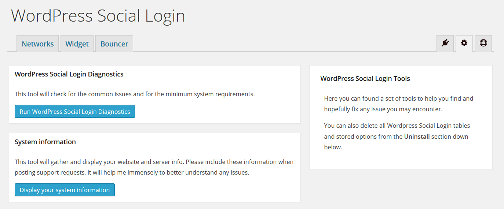
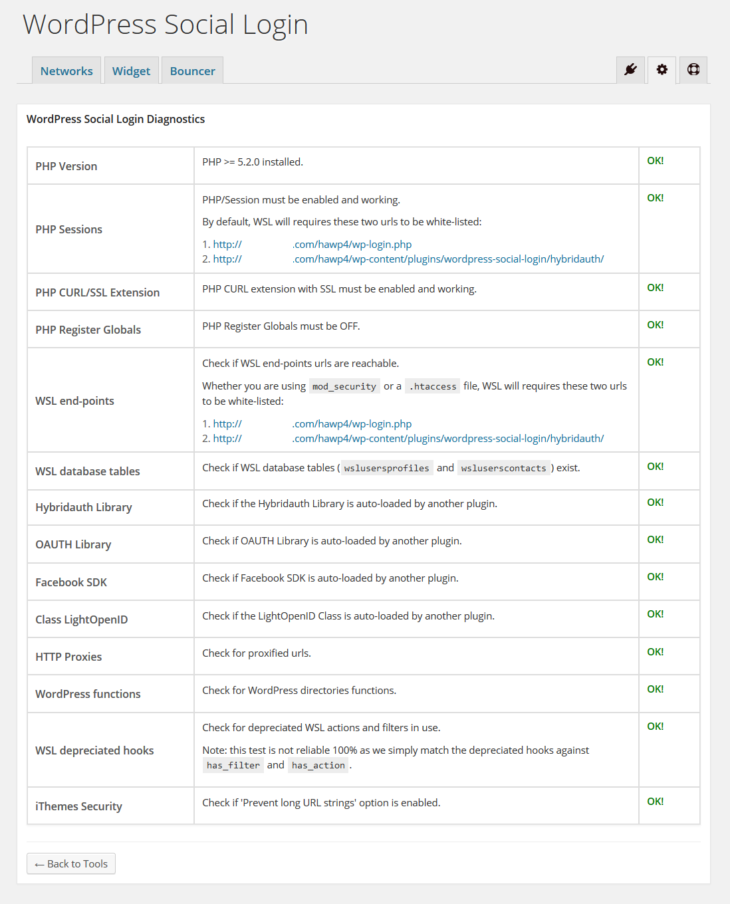

WordPress Social Login Diagnostics Troubleshooting
This tool will check for the common issues and for the minimum system requirements. If WordPress Social Login Diagnostics didn't detect any issue, yet the plugin still not working, then refer to the FAQ and look at wordpress forums to see if the issue you have is resolved, if not you may ask for support.

